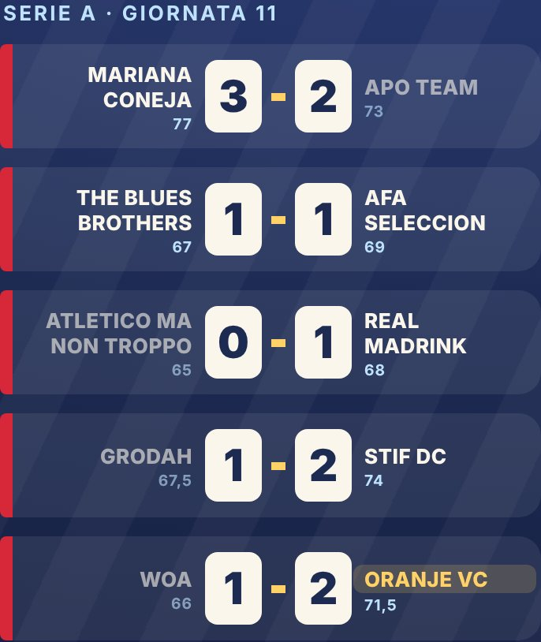
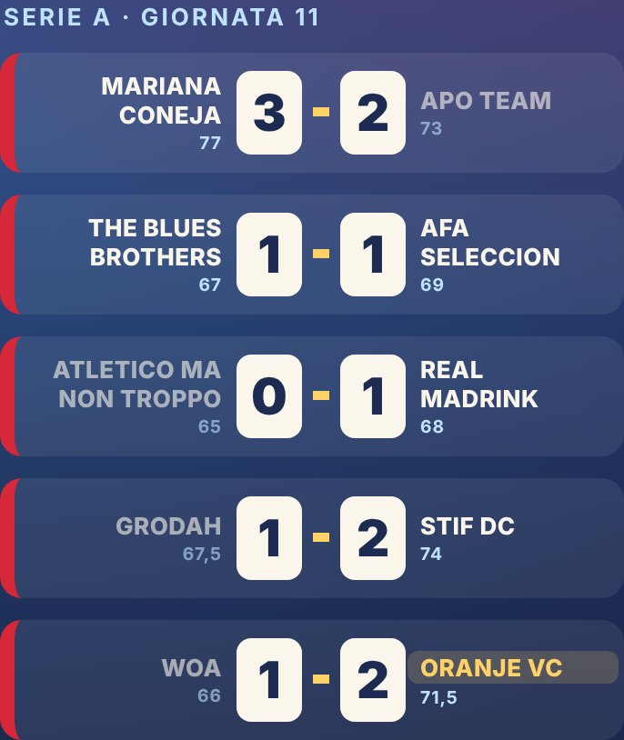
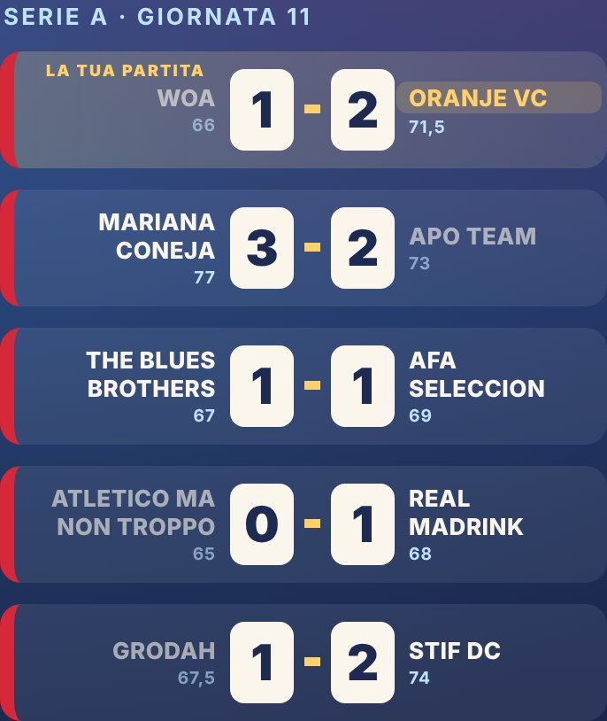

La tua partita per prima
Decisione di Gianluca (15 novembre): nel Tabellone chi entra con il codice della squadra trova la sua partita per prima, con un leggero velo oro e senza contorno. Albo d’oro e Derby restano senza oro. Esempio con Oranje VC.
Tabellone › Risultati







